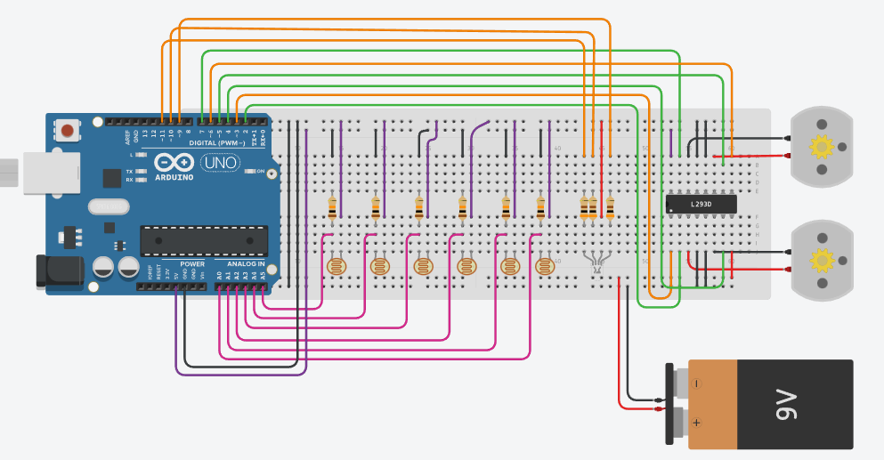

- 14 entradas e saídas digitais, no qual 6 pinos podem ser utilizados como saída PWM, que funciona como se adicionássemos intensidade no sinal. Dessa forma, ela pode ser utilizada, por exemplo, como volume, para regular a intensidade de brilho e muito mais.
- É uma placa com furos e conexões condutoras ultilizada para a montagem de protótipos e projetos em estado inicial.
- As baterias 9V proporcionam energia confiável aos aparelhos do dia a dia.
- São utilizados normalmente em acionamentos de máquinas operatrizes como por exemplo, ferramentas de avanço.
- É um componente eletrônico, sensível a luz, que tem por finalidade limitar a corrente elétrica que passa sobre ele, como um resistor comum, só que o grande diferencial é que ele é um resistor variável que interage com a luz.
- Uma Ponte H é um circuito especial que permite realizar a inversão da direção (polaridade) da corrente que flui através de uma carga. É muito utilizada, por exemplo, para controlar a direção de rotação de um motor DC.
- A presença de um resistor de maneira isolada em um circuito tem a função de limitar a passagem de corrente.
- emite luz por meio da passagem de corrente elétrica, mas ele apresenta a peculiaridade de ser composto por três LEDs de cores diferentes, sendo elas: vermelho (Red), verde (Green) e azul (Blue), surgindo daí o nome “RGB”.

Passe o mouse sobre mim
para ver o código usado
(código sem PID)
para ver o código usado
(código sem PID)
Nele usamos o seguinte código:
// Portas driver motor
#define PININ1 2
#define PININ2 4
#define PININ3 5
#define PININ4 7
#define PINENA 3
#define PINENB 6
// Portas led rgb
#define PINLEDR 9
#define PINLEDG 11
#define PINLEDB 10
// Portas sensor QTR
#define S1 A0
#define S2 A1
#define S3 A2
#define S4 A3
#define S5 A4
#define S6 A5
// Valores de ajustes para o seguidor de linha MIF
#define TRESHOLD 700 // Valor de referencia para cor da linha branca
#define SPEED0 255 // Valor de 0 a 255 para velocidade com a seguinte
leitura do sensor (0 0 1 1 0 0)
#define SPEED1 220 // Valor de 0 a 255 para velocidade com a seguinte
leitura do sensor (0 0 1 1 1 0)
#define SPEED2 150 // Valor de 0 a 255 para velocidade com a seguinte
leitura do sensor (0 0 0 1 0 0)
#define SPEED3 100 // Valor de 0 a 255 para velocidade com a seguinte
leitura do sensor (0 0 0 1 1 0)
#define SPEED4 80 // Valor de 0 a 255 para velocidade com a seguinte
leitura do sensor (0 0 0 1 1 1)
#define SPEED5 50 // Valor de 0 a 255 para velocidade com a seguinte
leitura do sensor (0 0 0 0 1 0)
#define SPEED6 0 // Valor de 0 a 255 para velocidade com a seguinte
leitura do sensor (0 0 0 0 1 1)
#define SPEED7 200 // Valor de 0 a 255 para velocidade com a seguinte
leitura do sensor (0 0 0 0 0 1)
#define RUNTIME 15500 // Valor para executar o percurso
void setup() {
Serial.begin(9600);
ledControl(13, true, 500);
ledControl(13, false, 500);
ledControl(13, true, 500);
ledControl(13, false, 500);
}
void loop() {
// TESTE 1°: leituta sensor
//readSensors(true, s);
// TESTE 2°: motor esquerda
//motorOption('4',255,255);
// TESTE 3°: motor direita
//motorOption('6', 255, 255);
// TESTE 4°: seguidor de linha
followLineMEF();
// TESTE 5°: teste led RGB
//rgbControl(0,0,255,0);
}
void motorControl(int speedLeft, int speedRight) {
// Função para controle do driver de motor
// Definições das portas digitais
pinMode(PININ1, OUTPUT);
pinMode(PININ2, OUTPUT);
pinMode(PININ3, OUTPUT);
pinMode(PININ4, OUTPUT);
pinMode(PINENA, OUTPUT);
pinMode(PINENB, OUTPUT);
// Ajustes motor da esquerda
if (speedLeft <= 0) {
speedLeft = -speedLeft;
digitalWrite (PININ3, HIGH);
digitalWrite (PININ4, LOW);
} else {
digitalWrite (PININ3, LOW);
digitalWrite (PININ4, HIGH);
}
// Ajustes motor da direita
if (speedRight < 0) {
speedRight = -speedRight;
digitalWrite (PININ1, LOW);
digitalWrite (PININ2, HIGH);
} else {
digitalWrite (PININ1, HIGH);
digitalWrite (PININ2, LOW);
}
analogWrite (PINENA, speedLeft);
analogWrite (PINENB, speedRight);
}
void motorOption(char option, int speedLeft, int speedRight) {
// Função para controle de motor com pre definições
switch (option) {
case '8': // Frente
motorControl(-speedLeft, speedRight);
break;
case '2': // Tras
motorControl(speedLeft, -speedRight);
break;
case '4': // Esqueda
motorControl(-speedLeft, -speedRight);
break;
case '6': // Direita
motorControl(speedLeft, speedRight);
break;
case '0': // Parar
motorControl(0, 0);
break;
}
}
bool motorStop(long runtime, long currentTime) {
// Função de parada do robô
if (millis() >= (runtime + currentTime)) {
motorOption('0', 0, 0);
int cont = 0;
while (true) {
ledControl(13, true, 250);
ledControl(13, false, 250);
cont++;
}
return false;
}
return true;
}
void rgbControl(int red, int green, int blue, long rumtime) {
// Função para controle do led rgb
pinMode(PINLEDR, OUTPUT);
pinMode(PINLEDG, OUTPUT);
pinMode(PINLEDB, OUTPUT);
digitalWrite(PINLEDR, HIGH);
digitalWrite(PINLEDG, HIGH);
digitalWrite(PINLEDB, HIGH);
analogWrite(PINLEDR, red);
analogWrite(PINLEDG, green);
analogWrite(PINLEDB, blue);
delay(rumtime);
}
void ledControl(int led, bool status, long rumtime) {
// Função para controle do led
pinMode(led, OUTPUT);
if (status) {
digitalWrite(led, HIGH);
} else {
digitalWrite(led, LOW);
}
delay(rumtime);
}
void readSensors(bool readSerial, int *sensors) {
// Função para leitura dos sensores
sensors[0] = analogRead(S1);
sensors[1] = analogRead(S2);
sensors[2] = analogRead(S3);
sensors[3] = analogRead(S4);
sensors[4] = analogRead(S5);
sensors[5] = analogRead(S6);
if (readSerial) {
Serial.print(sensors[0]);
Serial.print(' ');
Serial.print(sensors[1]);
Serial.print(' ');
Serial.print(sensors[2]);
Serial.print(' ');
Serial.print(sensors[3]);
Serial.print(' ');
Serial.print(sensors[4]);
Serial.print(' ');
Serial.println(sensors[5]);
}
}
void followLineMEF(void) {
// Função para controle do seguidor de linha em modo de maquina de estado finita
bool flag = true;
long currentTime = millis();
while (flag) {
// Flag para verificar a parada
flag = motorStop(RUNTIME, currentTime);
// Leitura sensores
int s[6];
readSensors(false, s);
// leitura do sensor (1 1 1 1 1 1)
if (s[0] <= TRESHOLD && s[1] <= TRESHOLD && s[2] <= TRESHOLD && s[3] <= TRESHOLD && s[4] <= TRESHOLD && s[5] <= TRESHOLD) {
motorOption('8', SPEED0, SPEED0);
// leitura do sensor (0 1 1 1 1 0)
} else if ( s[0] >= TRESHOLD && s[1] <= TRESHOLD && s[2] <= TRESHOLD && s[3] <= TRESHOLD && s[4] <= TRESHOLD && s[5] >= TRESHOLD) {
motorOption('8', SPEED0, SPEED0);
// leitura do sensor (0 0 1 1 0 0)
} else if ( s[0] >= TRESHOLD && s[1] >= TRESHOLD && s[2] <= TRESHOLD && s[3] <= TRESHOLD && s[4] >= TRESHOLD && s[5] >= TRESHOLD) {
motorOption('8', SPEED0, SPEED0);
// leitura do sensor (0 1 1 1 0 0)
} else if (s[0] >= TRESHOLD && s[1] <= TRESHOLD && s[2] <= TRESHOLD && s[3] <= TRESHOLD && s[4] >= TRESHOLD && s[5] >= TRESHOLD) {
motorOption('8', SPEED0, SPEED1);
// leitura do sensor (0 0 1 1 1 0)
} else if (s[0] >= TRESHOLD && s[1] >= TRESHOLD && s[2] <= TRESHOLD && s[3] <= TRESHOLD && s[4] <= TRESHOLD && s[5] >= TRESHOLD ) {
motorOption('8', SPEED1, SPEED0);
// leitura do sensor (0 0 1 0 0 0)
} else if (s[0] >= TRESHOLD && s[1] >= TRESHOLD && s[2] <= TRESHOLD && s[3] >= TRESHOLD && s[4] >= TRESHOLD && s[5] >= TRESHOLD) {
motorOption('8', SPEED0, SPEED2);
// leitura do sensor (0 0 0 1 0 0)
} else if (s[0] >= TRESHOLD && s[1] >= TRESHOLD && s[2] >= TRESHOLD && s[3] <= TRESHOLD && s[4] >= TRESHOLD && s[5] >= TRESHOLD ) {
motorOption('8', SPEED2, SPEED0);
// leitura do sensor (0 1 1 0 0 0)
} else if (s[0] >= TRESHOLD && s[1] <= TRESHOLD && s[2] <= TRESHOLD && s[3] >= TRESHOLD && s[4] >= TRESHOLD && s[5] >= TRESHOLD) {
motorOption('8', SPEED0, SPEED3);
// leitura do sensor (0 0 0 1 1 0)
} else if (s[0] >= TRESHOLD && s[1] >= TRESHOLD && s[2] >= TRESHOLD && s[3] <= TRESHOLD && s[4] <= TRESHOLD && s[5] >= TRESHOLD) {
motorOption('8', SPEED3, SPEED0);
// leitura do sensor (1 1 1 0 0 0)
} else if (s[0] <= TRESHOLD && s[1] <= TRESHOLD && s[2] <= TRESHOLD && s[3] >= TRESHOLD && s[4] >= TRESHOLD && s[5] >= TRESHOLD) {
motorOption('8', SPEED0, SPEED4);
// leitura do sensor (0 0 0 1 1 1)
} else if (s[0] >= TRESHOLD && s[1] >= TRESHOLD && s[2] >= TRESHOLD && s[3] <= TRESHOLD && s[4] <= TRESHOLD && s[5] <= TRESHOLD) {
motorOption('8', SPEED4, SPEED0);
// leitura do sensor (0 1 0 0 0 0)
} else if (s[0] >= TRESHOLD && s[1] <= TRESHOLD && s[2] >= TRESHOLD && s[3] >= TRESHOLD && s[4] >= TRESHOLD && s[5] >= TRESHOLD) {
motorOption('8', SPEED0, SPEED5);
// leitura do sensor (0 0 0 0 1 0)
} else if (s[0] >= TRESHOLD && s[1] >= TRESHOLD && s[2] >= TRESHOLD && s[3] >= TRESHOLD && s[4] <= TRESHOLD && s[5] >= TRESHOLD) {
motorOption('8', SPEED5, SPEED0);
// leitura do sensor (1 1 0 0 0 0)
} else if (s[0] <= TRESHOLD && s[1] <= TRESHOLD && s[2] >= TRESHOLD && s[3] >= TRESHOLD && s[4] >= TRESHOLD && s[5] >= TRESHOLD) {
motorOption('8', SPEED0, SPEED6);
// leitura do sensor (0 0 0 0 1 0)
} else if (s[0] >= TRESHOLD && s[1] >= TRESHOLD && s[2] >= TRESHOLD && s[3] >= TRESHOLD && s[4] <= TRESHOLD && s[5] <= TRESHOLD) {
motorOption('8', SPEED6, SPEED0);
// leitura do sensor (1 0 0 0 0 0)
} else if (s[0] <= TRESHOLD && s[1] >= TRESHOLD && s[2] >= TRESHOLD && s[3] >= TRESHOLD && s[4] >= TRESHOLD && s[5] >= TRESHOLD) {
motorOption('6', SPEED7, SPEED7);
// leitura do sensor (0 0 0 0 0 1)
} else if (s[0] >= TRESHOLD && s[1] >= TRESHOLD && s[2] >= TRESHOLD && s[3] >= TRESHOLD && s[4] >= TRESHOLD && s[5] <= TRESHOLD) {
motorOption('4', SPEED7, SPEED7);
}
}
}